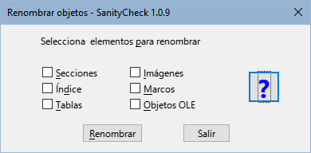
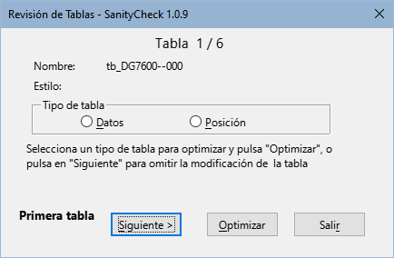
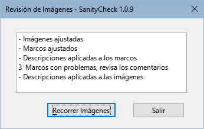

|
Español |
Macros para unificar el formato y estilos de las guías de LibreOffice v.2X.z
Este documento tiene derechos de autor © 2024 por el equipo de documentación de LibreOffice. Los colaboradores se listan más abajo. Se puede distribuir y modificar bajo los términos de la GNU General Public License versión 3 o posterior o la Creative Commons Attribution License, versión 4.0 o posterior.
Todas las marcas registradas mencionadas en esta guía pertenecen a sus propietarios legítimos.
|
Autor |
Colaboradores |
|
B.Antonio Fernández |
Olivier Hallot |
Las macros que componen la extensión aquí descrita son fruto de consultar distintas fuentes las cuales nombro en rasgos generales pues me es imposible detallar. Estas son:
La propia documentación del lenguaje Basic de los distintos derivados de StarOffice.
Los libros: Aprendiendo OooBasic de Mauricio Baeza, OpenOffice.org Macros Explained de Andrew Pitonyak y Programmation OpenOffice.org de Bernard Marcelly.
Consultas a los foros de OpenOffice y LibreOffice y el estudio de otras macros en las extensiones para Libre Office.
SanityCheck es una biblioteca de macros para Writer que pretende servir de ayuda para unificar el formato y los estilos de los capítulos y de las guías de LibreOffice.
Aunque algunas tareas se pueden realizar con las herramientas propias de Writer, las macros intentan centralizar las opciones que son específicas para el formato de los capítulos y automatizar algunos procesos que pueden llevar mucho tiempo y ser tediosos.
Como norma de seguridad, trabaje sobre una copia del archivo que vaya a revisar y guarde su trabajo progresivamente.
Utilice las macros preferentemente en los capítulos, antes de ensamblar la guía, pues le será más fácil corregir errores de formato y reducirá el tiempo de ejecución de las macros.
Las macros están empaquetadas como extensión y su instalación se efectúa como cualquier otra extensión, desde el gestor de extensiones. Si encuentra problemas en la actualización o instalación de una nueva versión, desinstale la versión antigua e instale la nueva versión.
Están escritas en LO Basic por lo que deberían ser compatibles para cualquier sistema operativo sin necesidad de instalar ninguna dependencia.
Añade una barra de herramientas (figura 1), así como un menú con nombre LO SanityCheck . Las herramientas también aparecen integradas en la interfaz de usuario En pestañas.
Figura 1: Barra de herramientas SanityCheck

Están disponibles en español, inglés y portugués, con la posibilidad de agregar otros idiomas añadiendo traducciones al módulo L10n.
Incorporan plantillas con los estilos propios de las guías (también en los tres idiomas para posibilitar la corrección ortográfica):
Plantilla de capítulo (para los capítulos individuales).
Plantilla patrón de documento (para crear un documento patrón y ensamblar la guía o asociarla a una guía completa en formato odt).
Plantilla de contraportada (para adjuntar a la guía completa).
Cada diálogo contiene una página de ayuda integrada que aporta información sobre la función de la herramienta y después ejecutar las macros se muestra un resumen de registro cambios.
Disponibilidad de las macros
Las macros están pensadas para el formato específico de las guías y concretamente para aplicarlas a los capítulos de las guías.
Aunque algunas macros se pueden emplear en un patrón de documento o una guía completa, encontrará que varias macros están deshabilitadas por razones de seguridad. Así mismo están muy limitadas para otros documentos ajenos a las guías.
Macro disponible para todo tipo de documento.
Macro disponible para todo tipo de documento.
Figura 2: Diálogo Asociar plantilla
Es la manera recomendada de trasladar los nuevos estilos a documentos antiguos. Si el documento no contiene los estilos necesarios, algunas macros estarán deshabilitadas.
Notas
— La plantilla patrón de documento se puede asociar a las guías completas tanto en formado ODM (patrón de documento) como en formato ODT. Esta plantilla contiene los mismos estilos que la de los capítulos pero difiere en los niveles de títulos que se presentan en el índice.
— En otros documentos sólo se puede aplicar la plantilla de capítulos.
Esta macro solo está disponible para capítulos o guías completas.
Figura 3: Diálogo Campos
Notas
— Los campos Capítulo X y Título están deshabilitados en guías completas.
— Los campos Colaborador y Editor, introducidos a partir de la versión 24, se rellenan automáticamente
Esta macro solo está disponible para los capítulos de las guías.
Figura 4: Diálogo Renombrar objetos

Nota
En la nueva versión de los capítulos, la sección COPYRIGHT debe estar incluida dentro de la sección DISPLAYAREA.
— Al renombrar las secciones la sección SEC_COPYRIGHT se desplaza automáticamente al inicio de SEC_DISPLAYAREA
Macro disponible para todo tipo de documento.
Comprueba que los estilos empleados en los capítulos sigan los estándares de la plantilla para evitar estilos ajenos a las guías (generalmente estilos de plantillas anteriores).
Recorre el documento y marca los párrafos con estilo ajeno a la documentación con un comentario y resalta los estilos de carácter ajeno con fondo negro y letra amarilla.
Sustituye los estilos de párrafo anteriores a las guías de la versión 24 por sus correspondientes actualizados, algunos con nombre incorrecto (transición a la nueva plantilla) y el estilo de carácter MenuPath por Destaque mayor (restos de versiones antiguas).
Permite la eliminación de estilos ajenos cuando no están aplicados en el documento.
Figura 5: Diálogo Comprobación de estilos
Nota
Las macros no pueden hacerlo todo. La labor del revisor consiste en sustituir los estilos ajenos a la plantilla por los correctos y eliminarlos del documento
Esta macro solo está disponible para los capítulos de las guías.
Figura 6: Diálogo Limpieza de formatos
Texto: limpia el formato directo aplicado a fragmentos o cadenas de texto. Al ejecutarla las numeraciones de las listas ordenadas se vuelven consecutivas en todo el documento por lo es recomendable marcar también la limpieza de Párrafos numerados.
Párrafos: Elimina el formato directo incluido el de bolos o numeraciones aplicado a párrafos normales y limpia también el formato directo de las listas no ordenadas.
Párrafos Numerados: En este caso, la macro elimina el formato directo aplicado a listas ordenadas y reinicia las numeraciones siempre que es posible, añadiendo un comentario a los párrafos en que puede que la numeración necesite un reinicio.
Notas
Para que la macro reinicie correctamente las numeraciones, toda lista debe estar precedida por el estilo de párrafo Body Text, List Intro. En muchos casos el estilo anterior a las listas es Cuerpo de texto.
La macro cambia automáticamente el estilo de los párrafos anteriores a las listas cuando tienen aplicado el estilo Cuerpo de texto.
Macro disponible para todo tipo de documento
Figura 7: Diálogo Revisión de tablas

Esta macro solo está disponible para los capítulos de las guías.
Figura 8: Registro de Revisión de imágenes

Esta macro no tiene un diálogo inicial, se ejecuta con los ajustes óptimos para los marcos e imágenes. Desde el diálogo de registro (figura 8) se puede acceder a la macro Recorrer imágenes.
Aplica el ancla y formato adecuado a las imágenes, a los marcos que las contienen y a las leyendas.
Obtiene el texto de la leyenda para aplicarlo a la descripción del marco e imagen.
Inserta comentarios en:
- Imágenes cuya relación de aspecto está desproporcionada.
- Imágenes que han sido recortadas con Writer.
- Leyendas mal formadas (posibles fallos en la modificación de una leyenda ya insertada).
Macro disponible para todo tipo de documento
Figura 9: Diálogo Revisión de imágenes
Abre un diálogo con la información de la versión (figura 10)
Figura 10: Diálogo Info
Las macros para verificar estilos y limpiar el formato directo están basadas directamente en las plantillas suministradas. Para que las macros funcionen correctamente, los capítulos tienen que tener aplicada la plantilla adecuada.
Se suministran plantillas para los idiomas Español, Inglés y portugués, pero solo se verán las plantillas correspondientes al idioma de la interfaz.
Las macros determinan el tipo de documento en función del nombre de archivo y seleccionan la plantilla adecuada para aplicar a los capítulos o a las guías completas (tanto en formato odm como en formato odt). En otros documentos solo se puede asociar la plantilla de capítulos.
Problemas con Nombres de estilos:
Solución:
Problema con estilos de carácter:
Solución:
Problemas con estilos de lista:
Solución
La macro no puede distinguir que tipo de formato directo se ha aplicado a un párrafo, por lo que elimina todo el formato directo, sea de sangría, de numeración o bolos, espaciado etc.
Consejo:
Las secuencia de numeración en listas ordenadas puede estar interrumpida por imágenes, avisos, notas o sugerencias.
Al limpiar el formato, la secuencia de numeración se pierde y la numeración se vuelve continua. Las macros intentan reiniciar la numeraciones pero no es fácil distinguir dónde reiniciarlas. Aunque la macro avisa de puntos donde se podría reiniciar, no es infalible.
Consejo:
Los estilos personalizados de las tablas no se aplican ni funcionan como los estilos de párrafo o de carácter, por lo que aunque aplique el estilo LO User Guides, es muy probable que tenga que ajustar la tabla para la división entre páginas, si fuera necesario y aplicar un formato más adecuado mediante el diálogo Propiedades de la tabla de Writer.
Al ajustar las figuras, los marcos se adaptan automáticamente a la anchura mayor del texto o de la imagen. En algunos casos, los marcos se ajustan a la anchura total del texto de la página.
Problema:
Solución:
Cree un nuevo documento con la plantilla suministrada.
Seleccione todo el texto del documento afectado y cópielo sobre el nuevo documento.
Trabaje sobre el nuevo documento.
En algunos casos, la macro inserta un comentario en imágenes que no es comprensible.
Problema:
Solución:
En algunos casos la macro inserta el comentario «Leyenda mal formada» no comprensible.
Problema:
Solución:
Problema:
Solución:
Reconstruya la figura copiando solo la imagen y pegándola en otro párrafo (asegúrese de copiar solo la imagen).
Inserte una nueva leyenda.
Corrija las referencias a la figura dentro del texto del documento.